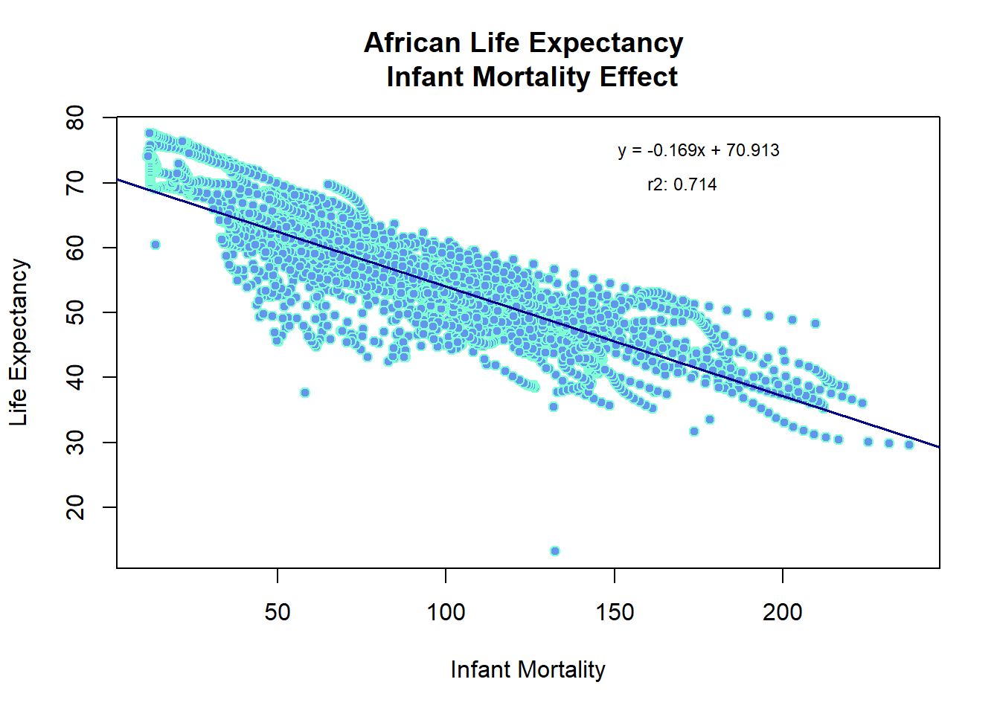

── Conflicts ────────────────────────────────────────── tidyverse_conflicts() ──
✖ dplyr::filter() masks stats::filter()
✖ dplyr::lag() masks stats::lag()
✖ dplyr::select() masks MASS::select()
ℹ Use the conflicted package (<http://conflicted.r-lib.org/>) to force all conflicts to become errors
library(dplyr)library(writexl)
Warning: package 'writexl' was built under R version 4.3.3
# Define the absences variableset.seed(0717)absences <-rpois(320, lambda =1)# Define the coding_viz variableset.seed(0717)coding_viz <-rnorm(320, 85, 5)coding_viz <-pmin(coding_viz, 100)coding_viz <-round(coding_viz, 2)
# Define the situational variableset.seed(0717)situational <-round(runif(320, 60, 100))
# Assuming correlated_vars_df is already defined and processed# If not, please define it similarly to other variables# Example definition of correlated_vars_df# Make sure correlated_vars_df has 320 rowscorrelated_vars_df <-data.frame(interview_p1 =rnorm(320, 7, 2),interview_p2 =rnorm(320, 7, 2),interview_p3 =rnorm(320, 7, 2),coding_cleaning =rnorm(320, 90, 5),coding_ml =rnorm(320, 90, 5),performance =rnorm(320, 85, 10))
# Cap the scores as in previous stepscap_score <-function(x, max_value) {pmin(x, max_value)}correlated_vars_df <- correlated_vars_df %>%mutate(interview_p1 =round(cap_score(interview_p1, 10), 1),interview_p2 =round(cap_score(interview_p2, 10), 1),interview_p3 =round(cap_score(interview_p3, 10), 1),coding_cleaning =round(cap_score(coding_cleaning, 100), 2),coding_ml =round(cap_score(coding_ml, 100), 2),performance =round(cap_score(performance, 100)) )# Assuming id and management are defined# Example definitionid <-1:320management <-sample(70:100, 320, replace =TRUE)# Combine into applicant_scores data frameapplicant_scores <-cbind( id, management, situational, coding_viz, correlated_vars_df, absences)# Subset the first 300 rowsapplicant_final <- applicant_scores[1:300, ]
# Write to Excel filewrite_xlsx(as.data.frame(applicant_final), "Employee_Selection_Scores.xlsx")
# Histogram of situational scoresggplot(applicant_final, aes(x = situational)) +geom_histogram(binwidth =5, fill ="blue", color ="black") +labs(title ="Histogram of Situational Scores", x ="Situational Score", y ="Frequency")
# Generalized linear model plotggplot(applicant_final, aes(x = situational, y = performance)) +geom_point() +geom_smooth(method ="glm", se =FALSE, color ="green") +labs(title ="Generalized Linear Model: Situational vs Performance", x ="Situational Score", y ="Performance Score")
`geom_smooth()` using formula = 'y ~ x'
# Linear model plotggplot(applicant_final, aes(x = situational, y = performance)) +geom_point() +geom_smooth(method ="lm", se =FALSE, color ="red") +labs(title ="Linear Model: Situational vs Performance", x ="Situational Score", y ="Performance Score")
`geom_smooth()` using formula = 'y ~ x'

# Generalized linear model plotggplot(applicant_final, aes(x = situational, y = performance)) +geom_point() +geom_smooth(method ="glm", se =FALSE, color ="green") +labs(title ="Generalized Linear Model: Situational vs Performance", x ="Situational Score", y ="Performance Score")
`geom_smooth()` using formula = 'y ~ x'
# Scatter plotggplot(applicant_final, aes(x = situational, y = performance)) +geom_point(color ="blue") +labs(title ="Scatter Plot: Situational vs Performance", x ="Situational Score", y ="Performance Score")